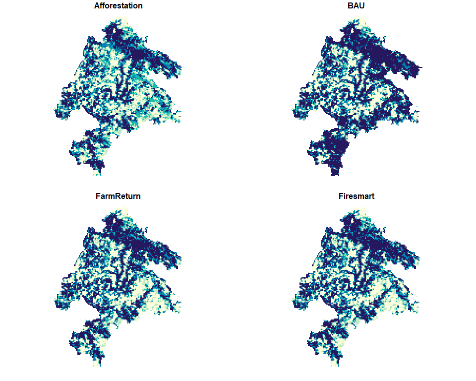
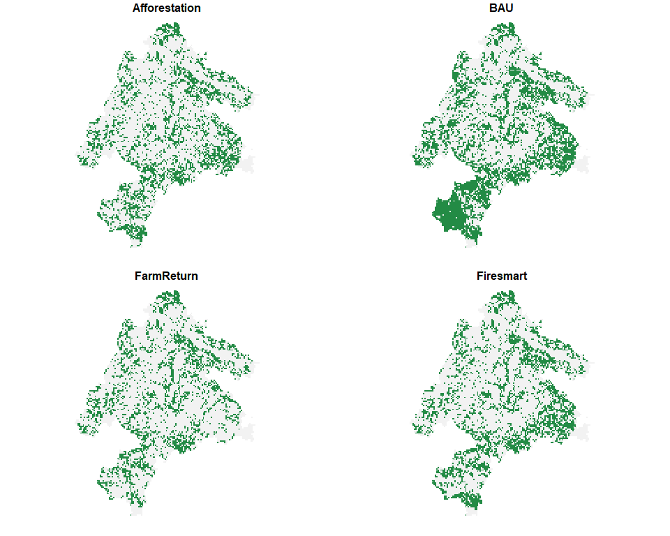
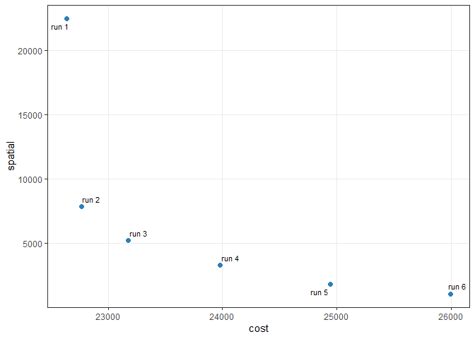

multiscape is an exact optimisation framework for multi-action, multi-objective spatial planning in R. It addresses planning problems in which management actions are explicit decision alternatives whose spatial allocation must satisfy planning requirements while accounting for multiple competing objectives. Building on the transition from place-based prioritisation towards spatially explicit action planning (Tallis et al., 2021; Salgado-Rojas et al., 2023), multiscape jointly represents where management actions can be implemented, which actions are selected, and the consequences expected from those decisions.
Planning units, features, feasible actions, action-specific costs and outcomes, and spatial or management constraints are represented within a mixed-integer linear programming (MILP) formulation. Multiple objectives are defined independently, allowing ecological, economic, and spatial criteria to remain explicit rather than being collapsed a priori into a single criterion. Alternative spatial plans can then be generated and compared to characterise trade-offs among objectives and the corresponding spatial allocation of management actions. This formulation supports conservation and restoration applications as well as broader multiple-use spatial planning problems involving ecological, economic, and social objectives (Neubert et al., 2025).
Installation
Install the released version of multiscape from Comprehensive R Archive Network (CRAN):
install.packages("multiscape")Alternatively, install the latest development version from GitHub:
if (!requireNamespace("remotes", quietly = TRUE)) {
install.packages("remotes")
}
remotes::install_github("josesalgr/multiscape")Getting started
Multi-action planning in the Meseta Ibérica
We illustrate the multiscape workflow using a spatial planning problem from Spain’s Meseta Ibérica, adapted from Cánibe Iglesias et al. (2025). The example comprises 11,109 planning units, 151 species, four ecosystem-service features, and four alternative management actions: Afforestation, BAU, FarmReturn, and Firesmart.
Understand the planning inputs
Before constructing the optimisation problem, we examine its spatial units, features, management alternatives, implementation costs, and expected outcomes. The example data are included in multiscape and can be loaded directly.
library(multiscape)
meseta <- load_meseta()Planning units
The study area is divided into 11,109 planning units of approximately 1 km². Each unit represents a location where a management action may be implemented. The supplied spatial polygons and identifiers are stored in planning_units.
head(meseta$planning_units)
#> Simple feature collection with 6 features and 2 fields
#> Geometry type: POLYGON
#> Dimension: XY
#> Bounding box: xmin: 2936400 ymin: 2279200 xmax: 2945400 ymax: 2281200
#> Projected CRS: GRS_1980_IUGG_1980_Lambert_Azimuthal_Equal_Area
#> id geometry cost
#> 1 1 POLYGON ((2944400 2280200, ... 0.1
#> 2 2 POLYGON ((2945400 2280200, ... 0.1
#> 3 3 POLYGON ((2937400 2279200, ... 0.1
#> 4 4 POLYGON ((2938400 2279200, ... 0.1
#> 5 5 POLYGON ((2939400 2279200, ... 0.1
#> 6 6 POLYGON ((2944400 2279200, ... 0.1Features and reference amounts
The planning problem considers 155 features: 151 species and four ecosystem services. A feature is a measurable quantity represented in the planning model. The features table identifies these quantities, while dist_features provides their reference amounts by planning unit and feature. These amounts serve as the comparison values for action-specific outcomes; they do not define management decisions or representation targets.
head(meseta$features)
#> id name
#> 1 1 ACCGENT
#> 2 2 ACCNISU
#> 3 3 ACRARUN
#> 4 4 ACRSCIR
#> 5 5 AEGCAUD
#> 6 6 AERIn this example, dist_features assigns zero credited representation to the reference. Representation is instead credited through the outcomes associated with selected actions.
Management actions and implementation costs
Four alternative actions can be implemented throughout the study area: Afforestation, BAU, FarmReturn, and Firesmart. Their implementation costs vary by planning unit, so a plan’s cost depends on which actions are chosen and where they are implemented.
meseta$actions
#> id name
#> 1 1 Afforestation
#> 2 2 BAU
#> 3 3 FarmReturn
#> 4 4 Firesmart
plot(
meseta$maps$costs,
main = "Action-specific implementation costs",
border = NA,
pal = function(n) hcl.colors(n, "YlGnBu", rev = TRUE)
)
Action-specific outcomes
The same feature may respond differently to different management actions and locations. The outcomes table supplies its expected representation for each recorded planning-unit, feature, and action combination. In this dataset, outcomes are binary: a value of 1 credits one unit of representation, while unrecorded combinations contribute zero. This coding also applies to the included ecosystem-service features.
head(meseta$outcomes)
#> pu feature outcome action
#> 1 1 7 1 1
#> 2 1 8 1 1
#> 3 1 12 1 1
#> 4 1 13 1 1
#> 5 1 14 1 1
#> 6 1 15 1 1The maps below illustrate the action-specific representation of DENMINO. They show outcomes, rather than differences from the reference.
plot(
meseta$maps$DENMINO,
main = "Action-specific outcomes for DENMINO",
border = NA,
breaks = c(-0.1, 0.5, 1.1),
pal = function(n) c("grey95", "#238b45")
)
Build the optimisation problem
We now use these inputs to build a Problem object. The stages below first establish its spatial and feature structure, then add management decisions and their consequences, feasibility requirements, and objectives. No optimisation is performed until the method and solver have been configured.
Stage 1: Create the base problem
create_problem() defines the planning units, the feature catalogue, and the reference amounts stored in dist_features. We pass the supplied tables directly. In Stage 4, include_pu_cost = FALSE excludes the separate planning-unit cost from the objective, so this example counts only the costs of implementing specific actions, which we introduce in Stage 2.
problem <- create_problem(
pu = meseta$planning_units,
features = meseta$features,
dist_features = meseta$dist_features,
cost = "cost"
)The initial Problem contains the spatial structure and 155 features, but no registered actions, effects, constraints, or objectives. This incomplete state is expected: those components are added in subsequent stages. We can inspect the model as it is being constructed.
print(problem)
#> A multiscape object (<Problem>)
#> ├─data
#> │├─planning units: <tbl_df> (11109 total)
#> │├─costs: min: 0.1, max: 0.1
#> │└─features: 155 total ("ACCGENT", "ACCNISU", "ACRARUN", ...)
#> └─actions and effects
#> │├─actions: none
#> │├─feasible action pairs: none
#> │├─effect data: none
#> │└─profit data: none
#> └─spatial
#> │├─geometry: sf (11109 rows)
#> │├─coordinates: 11109 rows (x: 2868900..3007900, y: 2110700..2280700)
#> │└─relations: none
#> └─targets and constraints
#> │├─targets: none
#> │├─area constraints: none
#> │├─budget constraints: none
#> │├─planning-unit locks: none
#> │└─action locks: none
#> └─model
#> │├─status: not built yet (will build in solve())
#> │├─objectives: none
#> │├─method: single-objective
#> │├─solver: not set (auto)
#> │└─checks: incomplete (no objective registered)
#> # ℹ Use `x$data` to inspect stored tables and model snapshots.Stage 2: Add actions and their effects
add_actions() registers the available management decisions and their implementation costs; it does not choose where to implement them. The loader already uses readable action names as identifiers consistently across actions, action_costs, and outcomes, so no preparation is needed.
problem <- problem |>
add_actions(
actions = meseta$actions,
cost = meseta$action_costs
)An outcome describes the amount of a feature under a particular action; an effect describes its change relative to the reference. If \(r\) denotes the reference amount and \(y\) the action-specific outcome, the signed effect is \(\Delta = y-r\). add_effects() accepts three equivalent ways of specifying a given action’s consequences, using one of the following columns:
| Column | Supplied value | Outcome \(y\) | Effect \(\Delta\) |
|---|---|---|---|
outcome |
Amount under the action | outcome |
\(y-r\) |
effect |
Signed absolute change | \(r+\text{effect}\) | effect |
relative_change |
Proportional change \(q\) | \(r(1+q)\) | \(rq\) |
For example, with a reference of 100, an outcome of 130, an effect of 30, and a relative change of 0.30 all describe the same resulting amount. They are alternative inputs, not values to supply together. When the reference is zero, proportional changes cannot produce a positive outcome; this example therefore uses the supplied outcome values directly.
problem <- problem |>
add_effects(
effects = meseta$outcomes
)At this point, the problem describes both the available spatial decisions and the consequences expected if they are implemented. The next stage determines which combinations of decisions are admissible.
Stage 3: Define the constraints
Constraints define the feasible set of spatial plans. We require at most one action per planning unit and impose an absolute representation target for each feature. sense = "max" makes the action-cardinality constraint an upper bound, so units may remain without a selected action. The feature targets require the sum of credited representation to reach the supplied minimum for each feature.
head(meseta$targets)
#> feature target
#> 1 1 92.8
#> 2 2 109.6
#> 3 3 26.4
#> 4 4 180.0
#> 5 5 102.4
#> 6 6 269.6
problem <- problem |>
add_constraint_action_cardinality(count = 1, sense = "max") |>
add_constraint_targets_absolute(meseta$targets)These targets are expressed in the outcome units rather than as percentages of the reference. Given the binary coding of this example, a fractional target must still be met or exceeded by the resulting total representation.
Stage 4: Define the objectives
Constraints determine whether a plan is feasible; objectives determine how feasible plans are evaluated. Here we register two quantities to minimise: the cost of implementing the chosen actions and their spatial fragmentation. They remain separate objectives until an optimisation method specifies how to combine them.
problem <- problem |>
add_spatial_relations(meseta$boundary, name = "boundary") |>
add_objective_min_cost(include_pu_cost = FALSE, alias = "cost") |>
add_objective_min_fragmentation_action(
relation_name = "boundary", alias = "spatial"
)The fragmentation objective sums weighted boundaries where the selection of a given action differs between neighbouring units. Matching action assignments contribute no boundary for that action; different actions contribute to their respective boundaries. Minimising this criterion favours more cohesive action patches without imposing strict connectivity. The supplied boundary table provides the spatial relations and their weights.
Stage 5: Configure and solve
The optimisation method specifies how registered objectives are handled. For a first illustrative run, we use a weighted sum with coefficients 1 for cost and 0.5 for fragmentation, minimising \(\text{cost}+0.5\,\text{spatial}\). Because weight normalisation and objective scaling are disabled, this choice is sensitive to the input units and should be understood as an illustrative preference, not a universally meaningful trade-off rate.
We save the formulation before configuring the method so that it can also be used for the multi-run exploration below.
problem <- problem |>
set_method_weighted_sum(
aliases = c("cost", "spatial"),
runs = set_runs_manual(data.frame(
weight_cost = 1,
weight_spatial = 0.5
)),
normalize_weights = FALSE,
objective_scaling = FALSE
)The solver then searches for a feasible assignment that minimises the weighted criterion. We use Gurobi, which requires a valid installation and licence, with a 300-second solver limit and a 5% relative optimality-gap limit. Building the optimisation model can require additional time and memory. The optimisation is executed when knitting this README and its result is cached, so subsequent renders need not repeat the solve unless the code changes. Rendering this chunk requires an installed and licensed Gurobi solver.
problem <- set_solver_gurobi(
problem,
gap_limit = 0.05,
time_limit = 300,
verbose = TRUE
)
solutions <- solve(problem)
#> Set parameter Username
#> Set parameter LicenseID to value 2844238
#> Set parameter TimeLimit to value 300
#> Set parameter FeasibilityTol to value 1e-09
#> Set parameter IntFeasTol to value 1e-09
#> Set parameter MIPGap to value 0.05
#> Set parameter MIPGapAbs to value 0
#> Set parameter OptimalityTol to value 1e-09
#> Set parameter NodefileStart to value 0.5
#> Academic license - for non-commercial use only - expires 2027-07-14
#> Gurobi Optimizer version 12.0.2 build v12.0.2rc0 (win64 - Windows 10.0 (19045.2))
#>
#> CPU model: 12th Gen Intel(R) Core(TM) i7-12700H, instruction set [SSE2|AVX|AVX2]
#> Thread count: 14 physical cores, 20 logical processors, using up to 20 threads
#>
#> Non-default parameters:
#> TimeLimit 300
#> FeasibilityTol 1e-09
#> IntFeasTol 1e-09
#> MIPGap 0.05
#> MIPGapAbs 0
#> OptimalityTol 1e-09
#> NodefileStart 0.5
#> LogToConsole 0
#>
#> Optimize a model with 327122 rows, 142317 columns and 2120102 nonzeros
#> Model fingerprint: 0x18f5272c
#> Variable types: 86772 continuous, 55545 integer (55545 binary)
#> Coefficient statistics:
#> Matrix range [1e+00, 1e+00]
#> Objective range [1e+00, 7e+00]
#> Bounds range [1e+00, 1e+00]
#> RHS range [8e-01, 9e+03]
#> Presolve removed 142334 rows and 11125 columns
#> Presolve time: 4.27s
#> Presolved: 184788 rows, 131192 columns, 1681755 nonzeros
#> Variable types: 0 continuous, 131192 integer (131192 binary)
#> Deterministic concurrent LP optimizer: primal simplex, dual simplex, and barrier
#> Showing barrier log only...
#>
#> Root barrier log...
#>
#> Ordering time: 1.76s
#>
#> Barrier statistics:
#> AA' NZ : 5.943e+06
#> Factor NZ : 2.145e+07 (roughly 300 MB of memory)
#> Factor Ops : 4.108e+09 (less than 1 second per iteration)
#> Threads : 11
#>
#> Objective Residual
#> Iter Primal Dual Primal Dual Compl Time
#> 0 9.08549505e+07 -4.09748130e+05 2.40e+03 0.00e+00 2.36e+03 8s
#> 1 3.47762789e+07 -3.33400318e+05 8.66e+02 1.58e+00 7.33e+02 9s
#> 2 2.81132534e+06 -3.21967467e+05 8.05e+01 8.14e-01 6.08e+01 9s
#> 3 9.02184971e+05 -3.10629553e+05 2.45e+01 4.03e-01 1.91e+01 9s
#> 4 3.87322807e+05 -3.01982316e+05 9.29e+00 2.60e-01 7.71e+00 9s
#> 5 2.24942854e+05 -2.87930717e+05 4.49e+00 1.95e-01 4.08e+00 10s
#> 6 1.21722132e+05 -1.57332447e+05 1.92e+00 7.83e-05 1.43e+00 10s
#> 7 6.70445867e+04 -6.98603867e+04 5.85e-01 5.77e-15 4.66e-01 10s
#> 8 5.56541059e+04 -4.10644675e+04 3.67e-01 6.00e-15 2.90e-01 10s
#> 9 4.25341831e+04 -1.91292600e+04 1.67e-01 4.00e-15 1.60e-01 11s
#> 10 4.16902051e+04 -4.30829840e+03 1.59e-01 6.88e-15 1.17e-01 11s
#> 11 3.81011615e+04 9.81693227e+03 1.10e-01 3.66e-15 6.78e-02 11s
#> 12 3.33141639e+04 1.82504425e+04 5.66e-02 5.66e-15 3.44e-02 11s
#> 13 2.98016261e+04 2.19762987e+04 2.47e-02 7.69e-15 1.75e-02 11s
#> 14 2.88989373e+04 2.25255123e+04 1.84e-02 5.19e-15 1.42e-02 12s
#> 15 2.87336352e+04 2.36594964e+04 1.73e-02 4.00e-15 1.12e-02 12s
#> 16 2.76331951e+04 2.42516480e+04 1.04e-02 4.88e-15 7.48e-03 12s
#> 17 2.70453799e+04 2.45937589e+04 7.05e-03 5.50e-15 5.42e-03 12s
#> 18 2.65020957e+04 2.48596222e+04 4.22e-03 6.95e-15 3.63e-03 13s
#> 19 2.60274969e+04 2.52286068e+04 2.04e-03 4.52e-15 1.76e-03 13s
#> 20 2.58833211e+04 2.53155146e+04 1.48e-03 2.53e-15 1.25e-03 13s
#> 21 2.58179479e+04 2.53643921e+04 1.23e-03 4.88e-15 9.99e-04 14s
#> 22 2.57076401e+04 2.53843108e+04 8.25e-04 5.25e-15 7.13e-04 14s
#> 23 2.56171574e+04 2.54040800e+04 5.03e-04 8.76e-15 4.70e-04 14s
#> 24 2.55623126e+04 2.54257984e+04 3.11e-04 3.61e-15 3.01e-04 14s
#> 25 2.55186149e+04 2.54374382e+04 1.62e-04 3.58e-15 1.80e-04 15s
#> 26 2.54990910e+04 2.54513899e+04 9.99e-05 5.54e-15 1.05e-04 15s
#> 27 2.54875587e+04 2.54560979e+04 6.55e-05 4.63e-15 6.95e-05 15s
#> 28 2.54839890e+04 2.54580283e+04 5.50e-05 2.09e-15 5.74e-05 16s
#> 29 2.54810141e+04 2.54597586e+04 4.59e-05 5.38e-15 4.70e-05 16s
#> 30 2.54729208e+04 2.54612117e+04 2.15e-05 2.33e-15 2.59e-05 16s
#> 31 2.54703240e+04 2.54632141e+04 1.42e-05 3.87e-15 1.57e-05 16s
#> 32 2.54691539e+04 2.54640654e+04 1.09e-05 3.95e-15 1.12e-05 17s
#> 33 2.54659252e+04 2.54641982e+04 1.95e-06 6.77e-15 3.84e-06 17s
#> 34 2.54651950e+04 2.54648110e+04 1.66e-07 5.91e-15 8.56e-07 17s
#> 35 2.54651237e+04 2.54650654e+04 5.57e-08 4.41e-15 1.30e-07 18s
#> 36 2.54650851e+04 2.54650770e+04 3.69e-09 5.87e-15 1.79e-08 18s
#> 37 2.54650823e+04 2.54650821e+04 1.51e-10 1.23e-12 4.88e-10 18s
#>
#> Barrier solved model in 37 iterations and 17.94 seconds (18.67 work units)
#> Optimal objective 2.54650823e+04
#>
#>
#> Root crossover log...
#>
#> 165733 DPushes remaining with DInf 0.0000000e+00 18s
#> 3288 DPushes remaining with DInf 0.0000000e+00 20s
#> 0 DPushes remaining with DInf 0.0000000e+00 21s
#>
#> 22178 PPushes remaining with PInf 8.2450785e-06 21s
#> 0 PPushes remaining with PInf 0.0000000e+00 22s
#>
#> Push phase complete: Pinf 0.0000000e+00, Dinf 2.7618265e+03 22s
#>
#>
#> Root simplex log...
#>
#> Iteration Objective Primal Inf. Dual Inf. Time
#> 174690 2.5465082e+04 0.000000e+00 2.761826e+03 22s
#> 175374 2.5465082e+04 0.000000e+00 0.000000e+00 22s
#> Concurrent spin time: 0.00s
#>
#> Solved with barrier
#>
#> Root relaxation: objective 2.546508e+04, 175374 iterations, 17.38 seconds (13.70 work units)
#>
#> Nodes | Current Node | Objective Bounds | Work
#> Expl Unexpl | Obj Depth IntInf | Incumbent BestBd Gap | It/Node Time
#>
#> 0 0 25465.0822 0 2133 - 25465.0822 - - 24s
#> H 0 0 25633.000000 25465.0822 0.66% - 24s
#>
#> Explored 1 nodes (182306 simplex iterations) in 25.02 seconds (26.90 work units)
#> Thread count was 20 (of 20 available processors)
#>
#> Solution count 1: 25633
#>
#> Optimal solution found (tolerance 5.00e-02)
#> Best objective 2.563300000000e+04, best bound 2.546550000000e+04, gap 0.6535%We inspect the returned SolutionSet before analysing its objective values. The print method summarises the method, attempted runs, stored solutions, and solver diagnostics.
print(solutions)
#> A multiscape solution set (<SolutionSet>)
#> ├─method
#> │├─name: `weighted`
#> │├─objectives: 2 (cost, spatial)
#> │└─run design: manual
#> │ └─design detail: 1 requested runs
#> └─content
#> │├─design rows: 1
#> │├─attempted runs: 1
#> │├─stored solutions: 1
#> │└─without solution: 0
#> └─run summary
#> │├─statuses: optimal: 1
#> │├─runtime: 25.149
#> │├─gap: 0.0065
#> │├─design columns: none
#> │└─objective columns: value_cost, value_spatial
#> └─objective ranges
#> │├─cost: 23980
#> │└─spatial: 3306
#> # ℹ Use get_runs(), get_objectives(), get_pu(), and get_actions() to inspect
#> results.A 5% gap is a stopping tolerance, not a guarantee that the exact optimum or a unique spatial plan has been found. Check the reported solver status and gap before interpreting any returned solutions.
Interpret the solutions
The following analyses use the solutions object from Stage 5. The first results concern a single weighted run; we then vary the weight on spatial fragmentation to examine alternative plans.
Link the run to its stored solution
get_runs() links the requested run to the retained solution and reports its solver status, runtime, and gap. get_objectives() provides the component objective values in their original units. The weighted value of this run can be reconstructed using the same coefficients as above.
get_runs(solutions)
#> run_id solution_id status runtime gap
#> 1 1 1 optimal 25.149 0.006534545
performance <- get_objectives(solutions, format = "wide")
performance
#> solution_id cost spatial
#> 1 1 23980 3306Solver versions and stopping conditions can lead to different feasible plans. Interpret the values returned by your run rather than expecting a particular spatial solution.
Check target achievement
Targets express the required feature representation and should be checked independently of cost and fragmentation. get_targets() reports the required and achieved amounts for each feature, allowing all targets to be checked.
target_achievement <- get_targets(solutions)
head(target_achievement)
#> solution_id feature feature_name target_level total_available target achieved
#> 1 1 1 ACCGENT 92.8 NA 92.8 2384
#> 2 1 2 ACCNISU 109.6 NA 109.6 2636
#> 3 1 3 ACRARUN 26.4 NA 26.4 572
#> 4 1 4 ACRSCIR 180.0 NA 180.0 1068
#> 5 1 5 AEGCAUD 102.4 NA 102.4 103
#> 6 1 6 AER 269.6 NA 269.6 270
#> gap met
#> 1 2291.2 TRUE
#> 2 2526.4 TRUE
#> 3 545.6 TRUE
#> 4 888.0 TRUE
#> 5 0.6 TRUE
#> 6 0.4 TRUE
all(target_achievement$met)
#> [1] TRUEA value of TRUE in the final check indicates that all reported targets were met. Confirm that the solver returned a feasible solution before interpreting target achievement.
Decision space: inspect the selected actions
Objective values describe a plan’s performance; its decision space representation records which action was assigned to each planning unit. get_actions() returns the action-level results, including a selected indicator. Rather than plotting all 11,109 units, we display the first ten selected assignments and the number of units assigned to each action.
selected_actions <- get_actions(solutions, solution = 1)
selected_actions <- selected_actions[
selected_actions$selected == 1,
c("pu", "action", "cost"),
drop = FALSE
]
head(selected_actions, 10)
#> pu action cost
#> 2 1 2 1
#> 6 2 2 1
#> 10 3 2 1
#> 14 4 2 1
#> 18 5 2 1
#> 22 6 2 1
#> 26 7 2 1
#> 30 8 2 1
#> 34 9 2 1
#> 38 10 2 1
table(selected_actions$action)
#>
#> 1 2 3 4
#> 2363 2719 423 3185Objective space: explore the cost-fragmentation trade-off
To examine the compromise between cost and spatial cohesion, we keep the planning data and constraints fixed and vary the weight on fragmentation. We rebuild the same formulation in problemMO to keep this exploration independent of the preceding single-run problem. Each row in set_runs_manual() represents one run.
problemMO <- create_problem(
pu = meseta$planning_units,
features = meseta$features,
dist_features = meseta$dist_features,
cost = "cost"
) |>
add_actions(
actions = meseta$actions,
cost = meseta$action_costs
) |>
add_effects(
effects = meseta$outcomes
) |>
add_constraint_action_cardinality(count = 1, sense = "max") |>
add_constraint_targets_absolute(meseta$targets) |>
add_spatial_relations(meseta$boundary, name = "boundary") |>
add_objective_min_cost(include_pu_cost = FALSE, alias = "cost") |>
add_objective_min_fragmentation_action(
relation_name = "boundary", alias = "spatial"
) |>
set_solver_gurobi(
gap_limit = 0.05,
time_limit = 300,
verbose = FALSE
)
spatial_weights <- c(0, 0.1, 0.25, 0.5, 1, 2)
spatial_exploration <- problemMO |>
set_method_weighted_sum(
aliases = c("cost", "spatial"),
runs = set_runs_manual(data.frame(
weight_cost = 1,
weight_spatial = spatial_weights
)),
normalize_weights = FALSE,
objective_scaling = FALSE
)
alternatives <- solve(spatial_exploration)The objective values of the six solutions can be inspected directly with get_objectives() and visualised using plot_tradeoff().
get_objectives(alternatives, format = "wide")
#> solution_id cost spatial
#> 1 1 22637 22485
#> 2 2 22765 7865
#> 3 3 23173 5231
#> 4 4 23980 3306
#> 5 5 24944 1822
#> 6 6 25996 1090
plot_tradeoff(
alternatives,
label_runs = TRUE,
objectives = c("cost", "spatial"),
connect = FALSE
)
Both objectives are minimised, so smaller values are preferred on either axis. A larger spatial coefficient gives the solver a stronger incentive to accept higher costs if this reduces fragmentation. These six weighted runs sample the trade-off: they do not establish its complete Pareto frontier.
The returned objective values show the observed compromises directly: a lower fragmentation score may require a higher implementation cost, while a cost-focused run may produce a more fragmented assignment. Because the solver stops at a finite optimality gap, the sample can include dominated solutions. Subsequent frontier diagnostics describe the observed set, not a complete Pareto frontier.
Compare spatial similarity and recurring assignments
Objective values reveal performance, but do not show how similar two spatial prescriptions are. In decision space, Jaccard similarity measures overlap in selected planning unit-action pairs. A value of 1 means identical assignments; 0 means no assignments in common.
selection_similarity(alternatives, metric = "jaccard", format = "matrix")
#> 1 2 3 4 5 6
#> 1 1.0000000 0.3256152 0.2932796 0.2495680 0.2002491 0.1745742
#> 2 0.3256152 1.0000000 0.6390935 0.4364974 0.2988033 0.2468110
#> 3 0.2932796 0.6390935 1.0000000 0.5766297 0.4054251 0.3430646
#> 4 0.2495680 0.4364974 0.5766297 1.0000000 0.6582665 0.5065351
#> 5 0.2002491 0.2988033 0.4054251 0.6582665 1.0000000 0.7065921
#> 6 0.1745742 0.2468110 0.3430646 0.5065351 0.7065921 1.0000000
#> attr(,"metric")
#> [1] "jaccard"
action_frequency <- selection_frequency(alternatives)
head(action_frequency[order(-action_frequency$frequency), ], 10)
#> pu action n_selected n_solutions frequency
#> 80 10014 4 6 6 1
#> 82 10015 2 6 6 1
#> 145 1003 1 6 6 1
#> 185 10039 1 6 6 1
#> 193 10040 1 6 6 1
#> 197 10041 1 6 6 1
#> 204 10042 4 6 6 1
#> 214 10045 2 6 6 1
#> 317 10069 1 6 6 1
#> 325 10070 1 6 6 1Assignment frequency measures recurrence within the six retained plans, not an ecological selection probability or irreplaceability measure.
Identify an empirical compromise
An observed solution is dominated when another observed solution is no worse on either objective and better on at least one. frontier_knee() identifies a potential compromise among the observed non-dominated solutions. Its result depends on the sampled objective values and their normalisation, so it should be treated as a decision aid rather than a uniquely best plan. frontier_extremes() and frontier_distances() provide additional diagnostics relative to the observed extreme, ideal, and nadir values.
# Which observed solution offers an empirical compromise?
knee <- frontier_knee(alternatives, objectives = c("cost", "spatial"))
knee[, c("solution_id", "cost", "spatial", "knee_score"), drop = FALSE]
#> solution_id cost spatial knee_score
#> 1 3 23173 5231 0.4574124
# Best and worst observed values for each objective.
frontier_extremes(alternatives, objectives = c("cost", "spatial"))
#> solution_id objective sense bound role value
#> 1 1 cost min min best 22637
#> 2 6 cost min max worst 25996
#> 3 6 spatial min min best 1090
#> 4 1 spatial min max worst 22485
# Distance and ranking relative to the empirical ideal and nadir.
distances <- frontier_distances(
alternatives,
objectives = c("cost", "spatial"),
reference = c("ideal", "nadir")
)
distances[, c(
"solution_id", "distance_to_ideal", "rank_to_ideal",
"distance_to_nadir", "rank_from_nadir"
), drop = FALSE]
#> solution_id distance_to_ideal rank_to_ideal distance_to_nadir rank_from_nadir
#> 1 1 1.0000000 5 1.000000 5
#> 2 2 0.3189474 2 1.179910 1
#> 3 3 0.2508477 1 1.164767 2
#> 4 4 0.4130194 3 1.078791 3
#> 5 5 0.6876632 4 1.015298 4
#> 6 6 1.0000000 5 1.000000 5Link objective performance to spatial changes
Linkage analysis asks whether changes in objective performance correspond to small adjustments or substantial reconfigurations of selected actions. frontier_neighbors() identifies neighbouring solutions in objective space; linkage_distances() and linkage_turnover() relate performance differences to distances or changes in their spatial assignments.
neighbors <- frontier_neighbors(
alternatives, objectives = c("cost", "spatial")
)
linkage <- linkage_distances(
alternatives,
objectives = c("cost", "spatial"),
pairs = neighbors,
decision_metric = "jaccard"
)
linkage[, c(
"from_solution", "to_solution",
"objective_distance", "decision_distance"
), drop = FALSE]
#> from_solution to_solution objective_distance decision_distance
#> 1 6 5 0.3150517 0.2934079
#> 2 5 4 0.2952532 0.3417335
#> 3 4 3 0.2565453 0.4233703
#> 4 3 2 0.1729464 0.3609065
#> 5 2 1 0.6843989 0.6743848
turnover <- linkage_turnover(
alternatives,
objectives = c("cost", "spatial"),
pairs = neighbors,
decision_metric = "jaccard"
)
turnover[, c(
"from_solution", "to_solution", "objective_distance",
"decision_distance", "reconfiguration_rate"
), drop = FALSE]
#> from_solution to_solution objective_distance decision_distance
#> 1 6 5 0.3150517 0.2934079
#> 2 5 4 0.2952532 0.3417335
#> 3 4 3 0.2565453 0.4233703
#> 4 3 2 0.1729464 0.3609065
#> 5 2 1 0.6843989 0.6743848
#> reconfiguration_rate
#> 1 0.9313008
#> 2 1.1574252
#> 3 1.6502751
#> 4 2.0868113
#> 5 0.9853681linkage_contrasts() identifies the pairs with the greatest reconfiguration relative to their objective-space separation. linkage_transition() shows which assignments changed between a selected pair of solutions, and selection_consistency() summarises recurring planning-unit states. To keep the README compact, we display the contrast table and only a few rows of planning-unit consistency; detailed transition records remain available from the function itself.
linkage_contrasts(turnover, type = "high_reconfiguration", n = 2)
#> contrast_rank contrast_type from_solution to_solution
#> 1 1 high_reconfiguration 3 2
#> 2 2 high_reconfiguration 4 3
#> objective_distance decision_similarity decision_distance objective_tie
#> 1 0.1729464 0.6390935 0.3609065 FALSE
#> 2 0.2565453 0.5766297 0.4233703 FALSE
#> reconfiguration_rate changed_assignments changed_planning_units additions
#> 1 2.086811 3822 2175 1915
#> 2 1.650275 4663 2655 2324
#> removals activated_planning_units deactivated_planning_units action_switches
#> 1 1907 268 260 1647
#> 2 2339 316 331 2008
#> composition_changes from_cost to_cost delta_cost improvement_cost
#> 1 0 23173 22765 -408 408
#> 2 0 23980 23173 -807 807
#> from_spatial to_spatial delta_spatial improvement_spatial
#> 1 5231 7865 2634 -2634
#> 2 3306 5231 1925 -1925
transition <- linkage_transition(
alternatives, from = 1, to = 2, objectives = c("cost", "spatial")
)
print(transition)
#> Spatial solution transition
#> From solution: 1
#> To solution: 2
#>
#> Planning units changed: 4571 of 11109 (41.1%)
#> Activated: 168
#> Deactivated: 149
#> Action switches: 4254
#> Composition changes: 0
#>
#> Objective changes:
#> - cost: 128 (improvement -128)
#> - spatial: -14620 (improvement 14620)
#>
#> Use `$summary`, `$objectives`, `$transitions`, `$actions`, or `$state_matrix` for details.
head(selection_consistency(alternatives))
#> pu solution_group n_solutions selected_frequency managed_frequency
#> 1 1 all 6 1.0 1.0
#> 2 10 all 6 1.0 1.0
#> 3 100 all 6 1.0 1.0
#> 4 1000 all 6 1.0 1.0
#> 5 10000 all 6 0.0 0.0
#> 6 10001 all 6 0.5 0.5
#> unmanaged_frequency dominant_state dominant_frequency dominant_tie n_states
#> 1 0.0 2 0.8333333 FALSE 2
#> 2 0.0 2 0.8333333 FALSE 2
#> 3 0.0 2 0.8333333 FALSE 2
#> 4 0.0 1 0.8333333 FALSE 2
#> 5 1.0 unmanaged 1.0000000 FALSE 1
#> 6 0.5 unmanaged 0.5000000 FALSE 3
#> variable entropy normalized_entropy
#> 1 TRUE 0.4505612 0.6500224
#> 2 TRUE 0.4505612 0.6500224
#> 3 TRUE 0.4505612 0.6500224
#> 4 TRUE 0.4505612 0.6500224
#> 5 FALSE 0.0000000 0.0000000
#> 6 TRUE 1.0114043 0.9206198A complete executable example is provided in examples/meseta_iberica.R. The simulated workflow introduces additional optimisation methods and diagnostics on a smaller dataset.
Learn more
The package provides several prepared examples:
| Loader | Example |
|---|---|
load_sim_multiaction() |
64 spatial cells, two features and two actions for quick examples |
load_meseta() |
The Meseta Ibérica inputs used in this README |
load_ecosystem_services() |
Planning units and four raster layers for the integrated-planning vignette |
Browse the function reference for details of create_problem(), add_actions(), add_effects(), add_constraint_targets_absolute(), the set_method_*() functions, and solve(). Tools for inspecting alternatives are organised as frontier_*(), selection_*(), and linkage_*().
If you find a bug or would like to suggest an improvement, please open an issue.
References
Cánibe Iglesias, M., Hermoso, V., Azevedo, J. C., Campos, J. C., Salgado-Rojas, J., Sil, A‚., & Regos, A. (2025). Integrating multiple landscape management strategies to optimise conservation under climate and planning scenarios: a case study in the Iberian Peninsula. Ecosystem Services, 74, 101742. doi:10.1016/j.ecoser.2025.101742.
Tallis, H., Fargione, J., Game, E., et al. (2021). Prioritizing actions: spatial action maps for conservation. Annals of the New York Academy of Sciences, 1505(1), 118-141. doi:10.1111/nyas.14651.
Salgado-Rojas, J., Hermoso, V., & Alvarez-Miranda, E. (2023). prioriactions: Multi-action management planning in R. Methods in Ecology and Evolution. doi:10.1111/2041-210X.14220.
Neubert, S., McGowan, J., Metcalfe, K., et al. (2025). Multiple-use spatial planning for sustainable development and conservation. Trends in Ecology & Evolution, 40(11), 1126-1142. doi:10.1016/j.tree.2025.09.007.